1. Pablo tiene un terreno de forma cuadrada con un área de 169 m2, que quiere emplear como gallinero. ¿Cuántos metros de tela de alambre tiene que comprar para poder cercar los cuatro lados?
- A. 13
- B. 26
- C. 39
- D. 52
Para resolver este tipo de problemas es necesario conocer las fórmulas para calcular las áreas y volúmenes de los cuerpos geométricos más conocidos o comunes. Algunas fórmulas de utilidad son las siguientes:
| Cuerpo | Perímetro | Área |
|---|---|---|
| 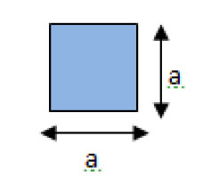 | P = 4a | A = a^2 |
| 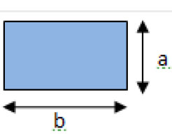 | P = 2a + 2b | A = ab |
| 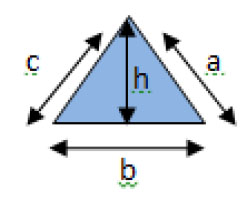 | P = a + b + c | A = \frac{bh}{2} |
| 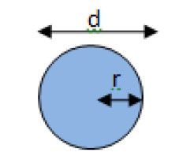 | P = 2 \pi r P = \pi d |
A = \pi r^2 |
| 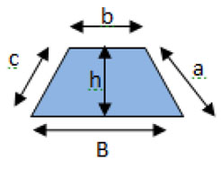 | P = a + b + c + B | A = \frac{(B + b)h}{2} |
| Cuerpo Geométrico | Volumen |
| 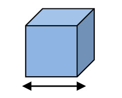 | V = a^3 |
| 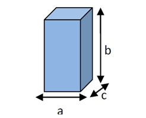 | V = abc |
| 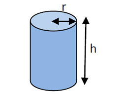 | V = \pi r^2 h |
| 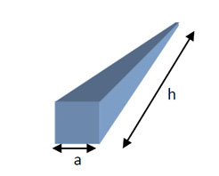 | V = \frac{1}{3} a^2 h |
| 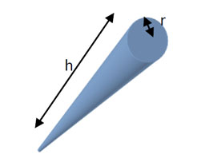 | V = \frac{1}{3} \pi r^3 |
| 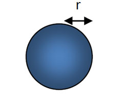 | V = \frac{4}{3} \pi r^3 |
Guía de Evaluación al ingreso de la Educación Superior Tecnológica 2004
314 palabras
1. Pablo tiene un terreno de forma cuadrada con un área de 169 m2, que quiere emplear como gallinero. ¿Cuántos metros de tela de alambre tiene que comprar para poder cercar los cuatro lados?
2. Una fábrica produce galletas cuadradas y las empaca en cajas en forma de cubo. Las cajas miden 15 cm por lado; cada galleta mide 5 cm por lado y 1 cm de espesor. ¿Cuántas galletas caben en una caja?
3. Martín quiere poner una manguera color neón alrededor del helado que está afuera de su nevería para llamar la atención de más clientes. Considerando las dimensiones del helado como se muestra en la figura, ¿cuál es la longitud en centímetros de manguera que se requiere para rodear el helado? 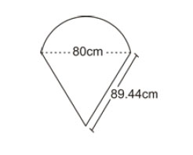
4.
El tío de Armando compró un terreno de forma cuadrada con un área de 135 cm^2, que sólo está cercado por tres lados.
¿Cuál es la longitud, en metros, de malla metálica necesaria para cubrir el lado que falta por cercar?
5. Una fábrica de papel realizará tarjetas publicitarias en forma rectangular de 135 cm2 de área, de tal forma que el largo del rectángulo es 6 cm mayor que el ancho ¿Cuál es el valor del ancho de la tarjeta?
6. Un terreno cuadrado está bardeado en tres de sus cuatro lados. ¿Cuántos metros se deben bardear en la parte faltante, si el área del terreno mide 196 m^2?
7. Una sala de museo tiene la forma como se muestra en la figura. 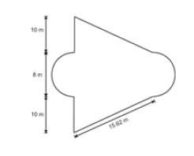 Para la instalación eléctrica se necesita tender un cable alrededor de todos los muros. ¿Cuántos metros deberá medir el cable?
8. La siguiente figura corresponde a un edificio escolar. 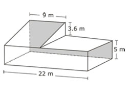 ¿Cuál es el área, en metros, de la parte trasera (parte sombreada)?
9.
Un diseñador elabora el boceto de una loseta, como se muestra en la figura, recortando un cuarto de circunferencia en cada vértice de un cuadrado con un lado de 12 cm.
10. El propietario de un restaurante quiere remodelar la entrada de su negocio y colocar un vitral en la superficie para que se vea de tipo colonial; el diseño y dimensiones de la entrada se muestran en la figura. 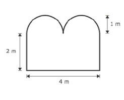 ¿Cuántos metros cuadrados tendrá el vitral?